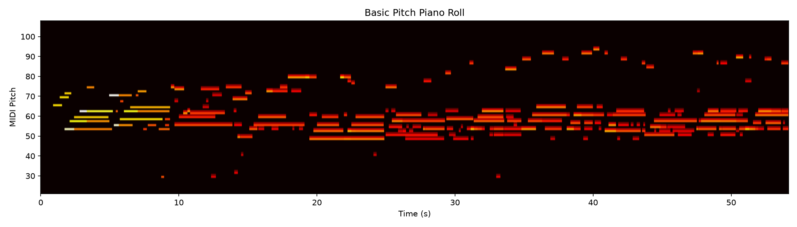
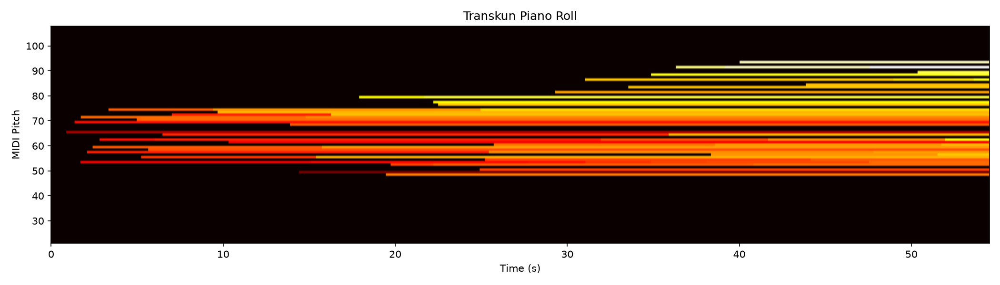

Fixture: 54.5s solo piano (M4A)
Note: Score PNG rendering had environmental issues with music21; MusicXML files are available in the output directory. Piano rolls and audio playback are functional.
Basic Pitch |
Transkun |
| Metric | Basic Pitch | Transkun |
|---|---|---|
| Engine | basic_pitch | transkun |
| Profile | general | solo_piano |
| Routing | profile=general -> engine=basic_pitch | profile=solo_piano -> engine=transkun |
| Raw note count | 234 | 102 |
| Pitch range | 29–93 | 48–93 |
| Notes <150ms | 10 | 5 |
| Notes ≥ MIDI 86 | 18 | 16 |
| Isolated high-register notes | 0 | 2 |
| Max polyphony | 6 | 6 |
| Median note duration | 0.545s | 0.877s |
| Transcription runtime | 5.73s | 14.23s |
| Metric | Basic Pitch | Transkun |
|---|---|---|
| Notation note count | 234 | 102 |
| Measures | 27 | 28 |
| Score systems | 1 | 1 |
| Tie elements | 102 | 68 |
| Accidental elements | 234 | 102 |
| Pitch range | 29–93 | 48–93 |
| Notes ≥ MIDI 86 | 18 | 16 |
| Analysis insight count | 3 | 3 |
| Key result | C major (conf=0.86) | C major (conf=0.90) |
| Tempo result | 120 BPM (conf=0.9) | 120 BPM (conf=0.9) |
| Meter result | 4/4 (conf=0.9) | 4/4 (conf=0.9) |
| Pipeline runtime (total) | ~6.4s | ~14.7s |
Basic Pitch:
Transkun:
Basic Pitch: {'engine': 'basic_pitch', 'library_version': '0.4.0', 'parameters': {'onset_threshold': 0.5, 'frame_threshold': 0.3}, 'profile_requested': 'general', 'routing_reason': 'profile=general -> engine=basic_pitch'}
Transkun: {'engine': 'transkun', 'library_version': '2.0.1', 'model': 'transkun_2.0', 'parameters': {'onset_threshold': 0.5, 'frame_threshold': 0.3, 'device': 'cpu'}, 'profile_requested': 'solo_piano', 'routing_reason': 'profile=solo_piano -> engine=transkun'}